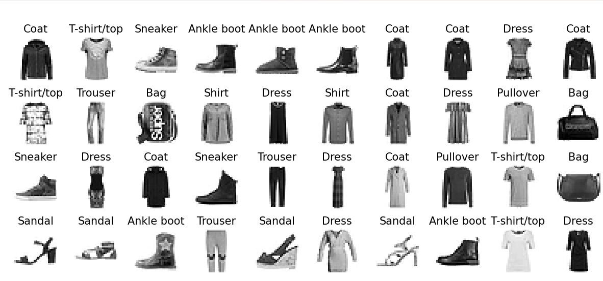

Deep Learning with TensorFlow & Keras
This project explores image classification on the popular Fashion-MNIST dataset (60,000 training and 10,000 test grayscale images of clothing items). The model classifies images into 10 fashion categories including shirts, trousers, sneakers, and bags.
Implemented with Keras Sequential API, the network learns dense feature representations from 28x28 pixel images, achieving strong performance while remaining compact and interpretable.
Flatten layer converts 28x28 image to 784 vector input.Training for 30 epochs showed rapid improvement in classification accuracy on both training and validation sets.
The trained model successfully recognized clothing types with good accuracy. Example predictions are shown below (model’s predicted label vs. true label):